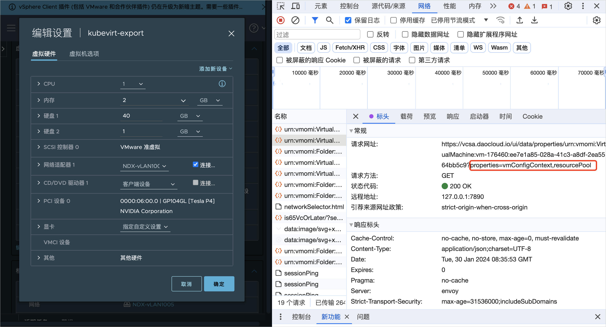
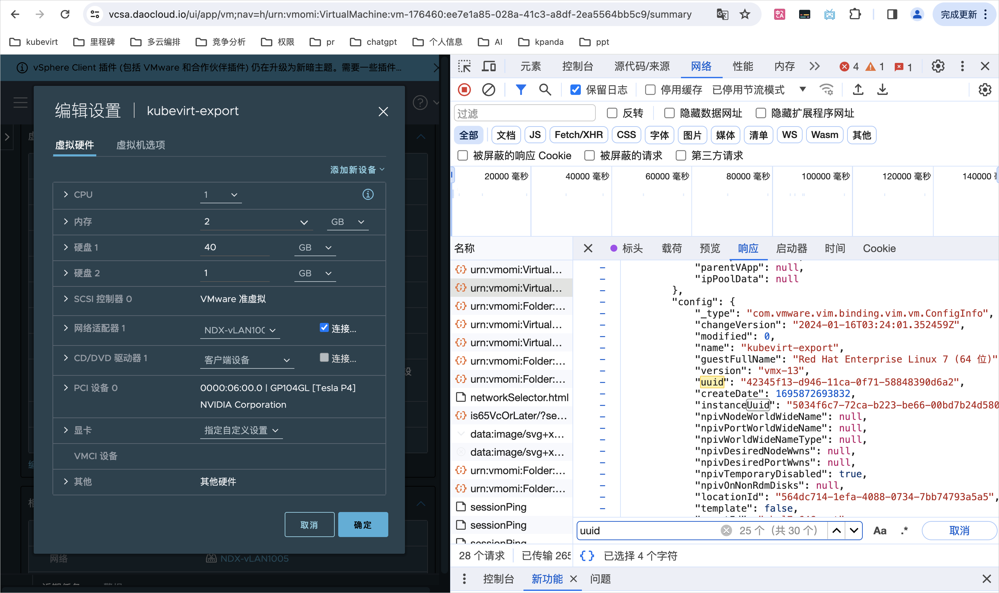
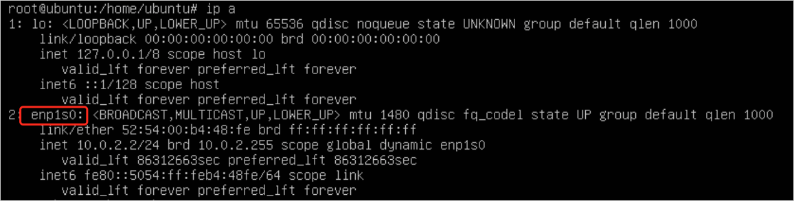
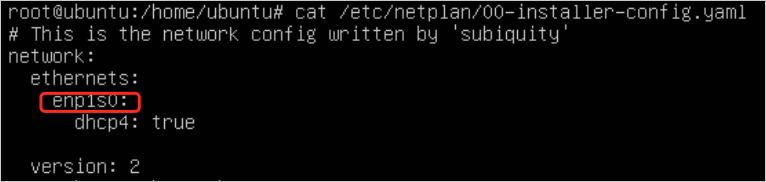
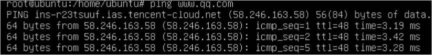
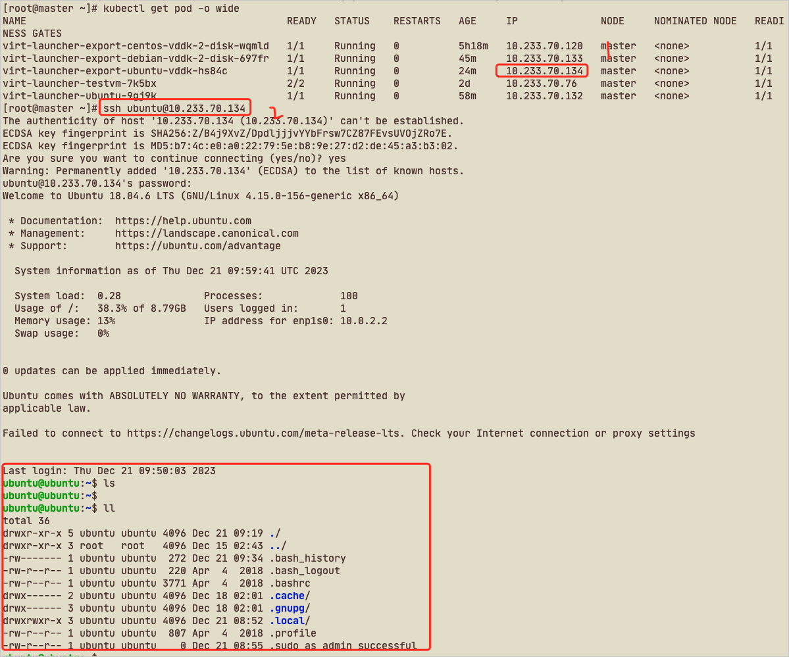

如何从 VMWare 导入传统 Linux 云主机到云原生云主机平台¶
本文将详细介绍如何通过命令行将外部平台 VMware 上的 Linux 云主机导入到 AI 算力中心的云主机中。
Info
本文档外部虚拟平台是 VMware vSphere Client，后续简写为 vSphere。 技术上是依靠 kubevirt cdi 来实现的。操作前，vSphere 上被导入的云主机需要关机。 以 Ubuntu 操作系统的云主机为例。
获取 vSphere 的云主机基础信息¶
-
vSphere URL：目标平台的 URL 地址信息
-
vSphere SSL 证书指纹 thumbprint：需要通过 openssl 获取
openssl s_client -connect 10.64.56.11:443 </dev/null | openssl x509 -in /dev/stdin -fingerprint -sha1 -noout输出类似于：
Can't use SSL_get_servername depth=0 CN = vcsa.daocloud.io verify error:num=20:unable to get local issuer certificate verify return:1 depth=0 CN = vcsa.daocloud.io verify error:num=21:unable to verify the first certificate verify return:1 depth=0 CN = vcsa.daocloud.io verify return:1 DONE sha1 Fingerprint=C3:9D:D7:55:6A:43:11:2B:DE:BA:27:EA:3B:C2:13:AF:E4:12:62:4D # 所需值 -
vSphere 账号：获取 vSphere 的账号信息，注意权限问题
-
vSphere 密码：获取 vSphere 的密码信息
-
需要导入云主机的 UUID（需要在 vSphere 的 web 页面获取）
-
进入 Vsphere 页面中，进入被导入云主机的详情页面，点击 编辑配置 ，此时打开浏览器的开发者控制台， 点击 网络 —> 标头 找到如下图所示的 URL。

-
点击 响应 ，定位到 vmConfigContext —> config ，最终找到目标值 uuid 。

-
-
需要导入云主机的 vmdk 文件 path
网络配置¶
需要根据网络模式的不同配置不同的信息，若有固定 IP 的需求，需要选择 Bridge 网络模式
- 创建 ovs 类型的 Multus CR，可参考创建 Multus CR
-
创建子网及 IP 池，参考创建子网和 IP 池
apiVersion: spiderpool.spidernet.io/v2beta1 kind: SpiderIPPool metadata: name: test2 spec: ips: - 10.20.3.90 subnet: 10.20.0.0/16 gateway: 10.20.0.1 --- apiVersion: spiderpool.spidernet.io/v2beta1 kind: SpiderIPPool metadata: name: test3 spec: ips: - 10.20.240.1 subnet: 10.20.0.0/16 gateway: 10.20.0.1 --- apiVersion: spiderpool.spidernet.io/v2beta1 kind: SpiderMultusConfig metadata: name: test1 namespace: kube-system spec: cniType: ovs coordinator: detectGateway: false detectIPConflict: false mode: auto tunePodRoutes: true disableIPAM: false enableCoordinator: true ovs: bridge: br-1 ippools: ipv4: - test1 - test2
获取 vSphere 的账号密码 secret¶
apiVersion: v1
kind: Secret
metadata:
name: vsphere # 可更改
labels:
app: containerized-data-importer # 请勿更改
type: Opaque
data:
accessKeyId: "username-base64"
secretKey: "password-base64"
编写 kubevirt vm yaml 创建 vm¶
Tip
若有固定IP需求，则该 yaml 与使用默认网络的 yaml 有一些区别，已标注。
apiVersion: kubevirt.io/v1
kind: VirtualMachine
metadata:
annotations:
kubevirt.io/latest-observed-api-version: v1
kubevirt.io/storage-observed-api-version: v1
virtnest.io/alias-name: ""
virtnest.io/image-secret: ""
creationTimestamp: "2024-05-23T06:46:28Z"
finalizers:
- kubevirt.io/virtualMachineControllerFinalize
generation: 1
labels:
virtnest.io/os-family: Ubuntu
virtnest.io/os-version: "22.04"
name: export-ubuntu
namespace: default
spec:
dataVolumeTemplates:
- metadata:
creationTimestamp: null
name: export-ubuntu-rootdisk
namespace: default
spec:
pvc:
accessModes:
- ReadWriteOnce
resources:
requests:
storage: 10Gi
storageClassName: local-path
source:
vddk:
backingFile: "[A05-09-ShangPu-Local-DataStore] virtnest-export-ubuntu/virtnest-export-ubuntu.vmdk"
url: "https://10.64.56.21"
uuid: "421d6135-4edb-df80-ee54-8c5b10cc4e78"
thumbprint: "D7:C4:22:E3:6F:69:DA:72:50:81:12:FA:42:18:3F:29:5C:7F:41:CA"
secretRef: "vsphere"
initImageURL: "release.daocloud.io/virtnest/vddk:v8"
runStrategy: Manual
template:
metadata:
annotations:
ipam.spidernet.io/ippools: '[{"cleangateway":false,"ipv4":["test2"]}]' // 这里添加 spiderpool 网络
creationTimestamp: null
spec:
architecture: amd64
domain:
devices:
disks:
- bootOrder: 1
disk:
bus: virtio
name: rootdisk
interfaces: // 修改这里的网络配置
- bridge: {}
name: ovs-bridge0
machine:
type: q35
resources:
requests:
memory: 4Gi
networks: // 修改这里的网络配置
- multus:
default: true
networkName: kube-system/test1
name: ovs-bridge0
volumes:
- dataVolume:
name: export-ubuntu-rootdisk
name: rootdisk
进入 VNC 检查是否成功运行¶
-
修改云主机的网络配置
-
查看当前网络
在实际导入完成时，如下图所示的配置已经完成。然而，需要注意的是，enp1s0接口并没有包含inet字段，因此无法连接到外部网络。

-
配置 netplan
在上图所示的配置中，将 ethernets 中的对象更改为 enp1s0，并使用 DHCP 获得 IP 地址。

-
将 netplan 配置应用到系统网络配置中
-
对外部网络进行 ping 测试

-
通过 SSH 在节点上访问云主机。
